-
Found sellable inventory in scrapped units
Wrote a Python script to analyze test history across ~1,000 scrapped accelerometers and identified 276 units (~$100K in parts) that met a new customer’s specifications. The same script let my team identify 375 more viable gyroscopes (~$230K), creating an opportunity for over $1M in inertial unit sales. -
Confirmed the root cause of accelerometer yield failures
Pulled SQL test data across 179 sensors and built a MATLAB pipeline that isolated a discrete −15 °C frequency anomaly in 50 units. Used Ansys structural-modal FEA to show that moisture/frost contamination could reproduce the observed frequency shift, then sent dozens of units for mass spectroscopy testing to verify the hypothesis. -
Recovered contaminated units through rework
Identified which units should go through a rework process (drill, vacuum-bake, reseal) that recovered 77% of moisture-contaminated units, saving $6,935 in parts cost and preserving $147K in shipped IMU revenue. -
Evaluated new die package designs with FEA
Designed and ran a 40-simulation study of 8 die package designs for the core accelerometer, using coupled thermal, structural, modal, and vibration simulations in Ansys Mechanical to compare sensor performance and survivability. The study prompted a pilot production run of the best simulated design.
Josiah Lo
Mechanical Engineering · UC Berkeley · B.S. May 2027
I design, analyze, and build mechanical systems.
- NowMechanical Engineer, EMCORE — Quartz MEMS Division
- TeamProject Lead, UC Berkeley Solar Vehicle Team
- FocusMechanical design · FEA · Mechatronics
EMCORE
>$1M
Sales opportunity created by analyzing test history of ~1,000 scrapped accelerometers
Solar vehicle
0.09→1.03
Safety factor of the composite suspension box after redesign, at +8.9% weight
EMCORE
77%
Of moisture-contaminated units recovered through rework, preserving $147K in shipped revenue
EMCORE
40 sims
Coupled thermal, structural, modal & vibration FEA across 8 die package designs
01
Experience
Industry work on quartz MEMS inertial sensors: accelerometers, gyroscopes, and IMUs.
The hardware
Public images of the quartz MEMS sensors and IMUs that my work at EMCORE involves.

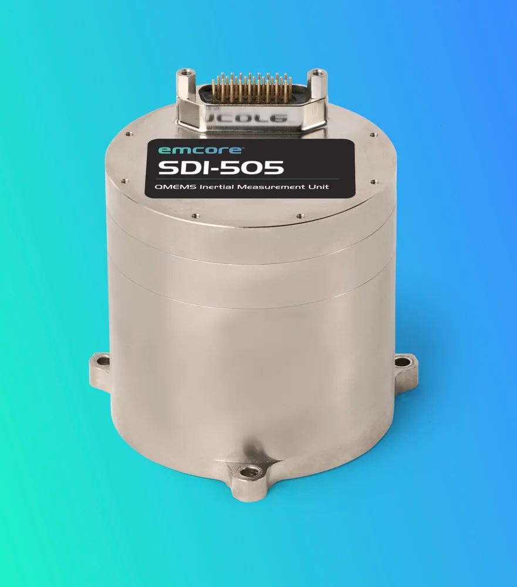

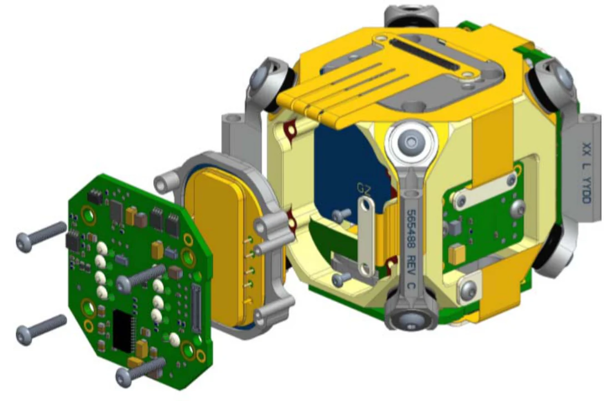

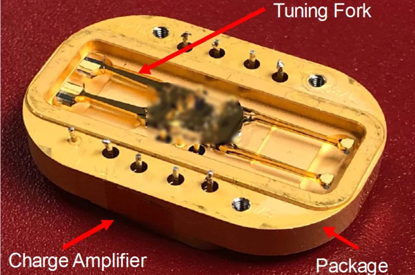

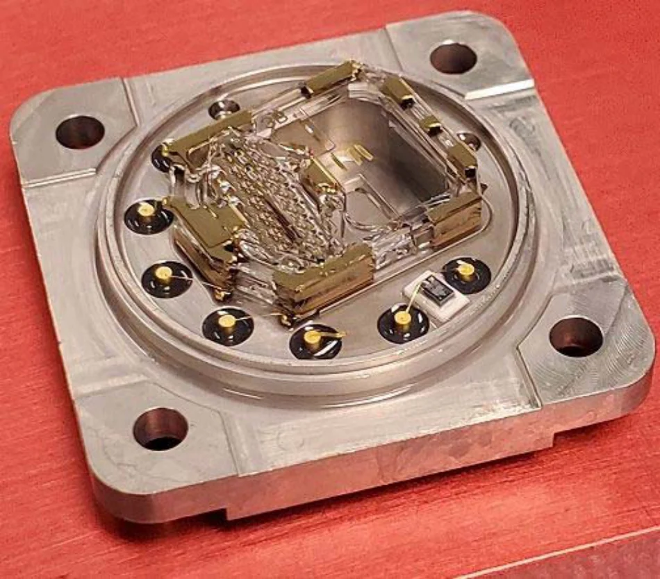
Sources: SDI-505 image from EMCORE’s product page. Other images from S. Zotov et al., “Compact In-Run Navigation Grade IMU Based on Quartz MEMS,” IEEE/ION PLANS 2020, Figs. 9, 3 and 7, © 2020 IEEE. The hardware and images are EMCORE’s.
02
Projects
Structures, mechanisms, and mechatronics. Each project opens into a short case study covering the problem, the process, and the results.
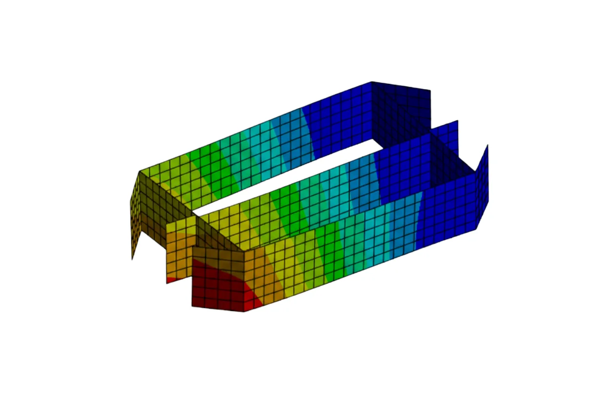
01 Oct 2025 – PresentComposite Suspension Box
Verified and redesigned a laminate-composite suspension box for UC Berkeley’s 11th-generation solar vehicle.
Safety factor 0.09 → 1.03 · +8.9% weight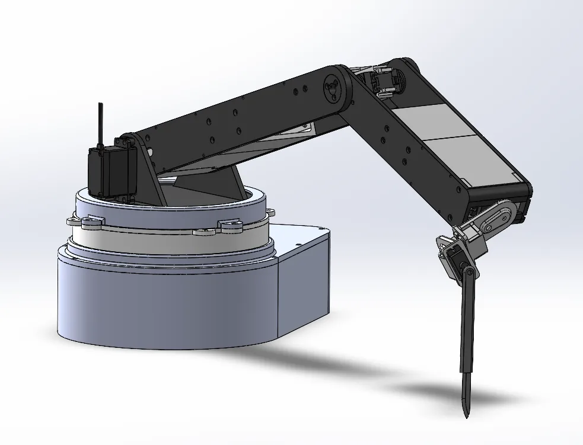
02 Dec 2025 – May 20266-Axis Surgical Robot Arm
A 3D-printed six-axis arm designed in SolidWorks, with a custom two-stage 15:1 cycloidal gearbox at the base joint.
15:1 cycloidal drive · 20-in reach radius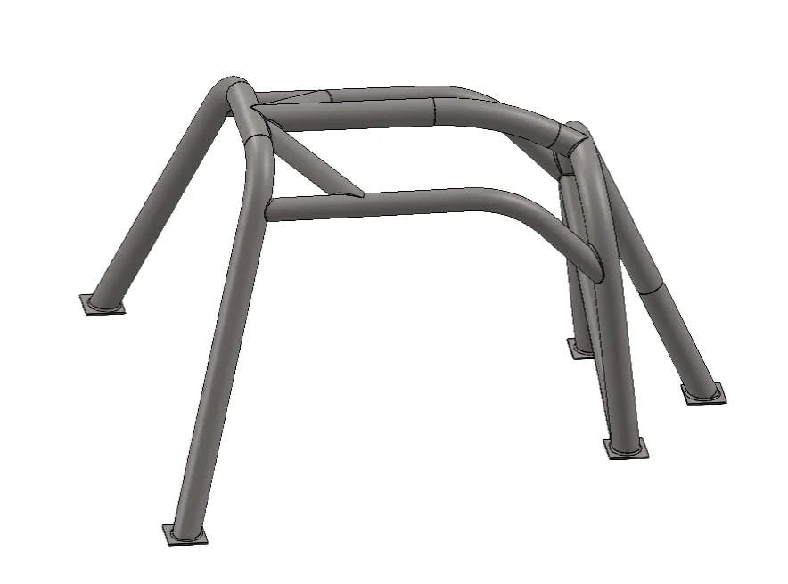
03 Sep – Oct 2025Solar Car Roll Cage
A chromoly roll cage sized for a 15 kN front load while minimizing weight × deflection.
FoS 1.86 · 0.049 in deflection · 26.08 lb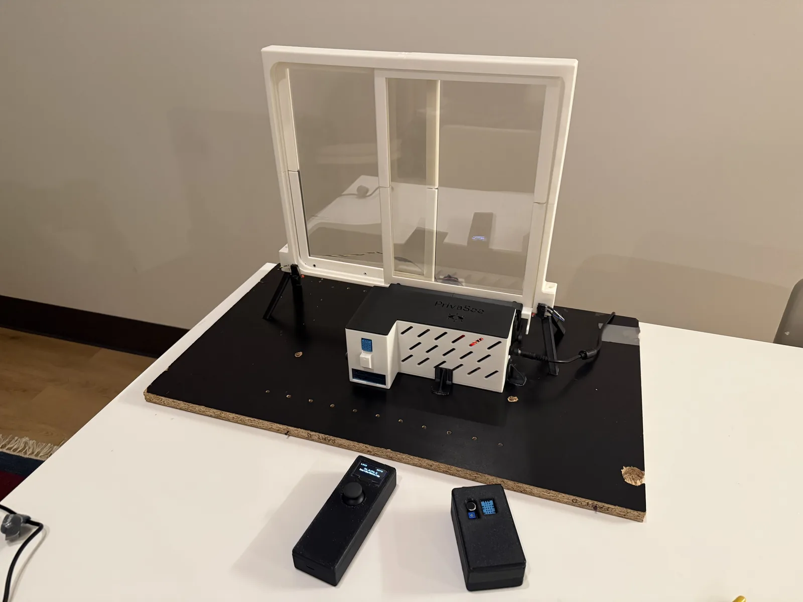
04 Nov – Dec 2025Autonomous Smart Window
Motorized actuation, locking, and PDLC tint control, driven by temperature, smoke, and noise sensing.
3 ESP32s · Python · custom circuitry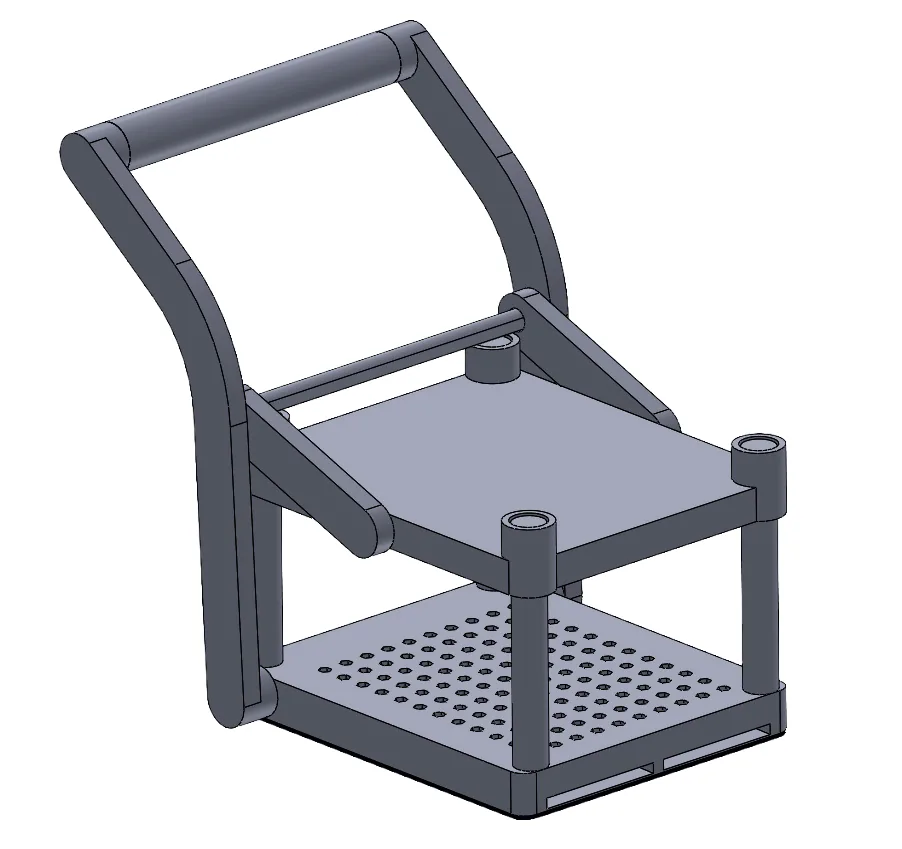
05 Oct – Nov 2025Lever-Actuated Sponge Press
A four-bar slider-crank press with an ASME Y14.5 drawing package, prototyped through multiple 3D-printed iterations.
9-part assembly · fits & tolerances
Personal build
Custom Car Stereo Fixture
A quick build from sketch to install: I hand-sketched the part with measured dimensions, modeled it in SolidWorks, and 3D-printed a fixture to fit an aftermarket stereo into a car dashboard.
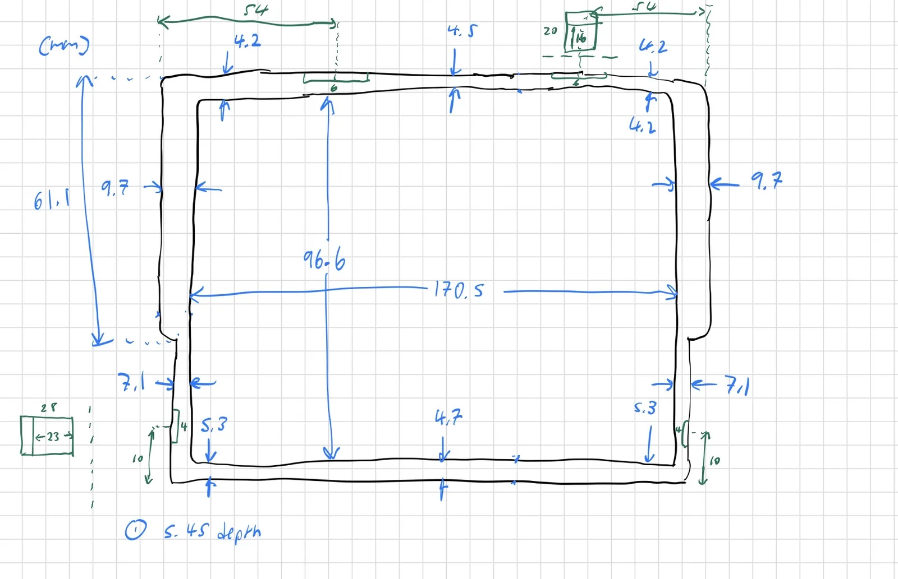
Sketch 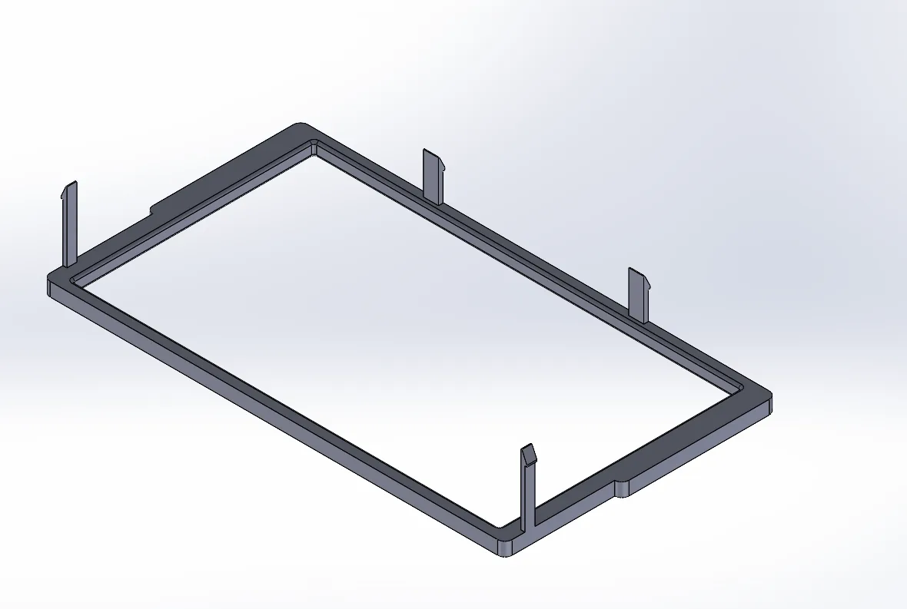
CAD 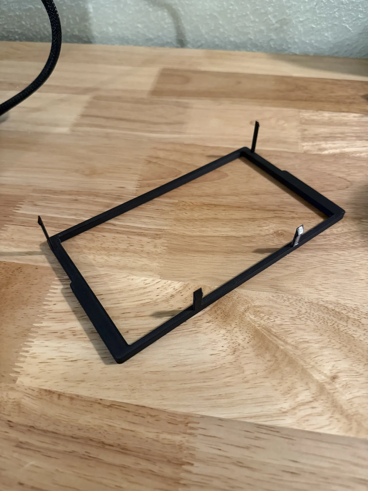
Print 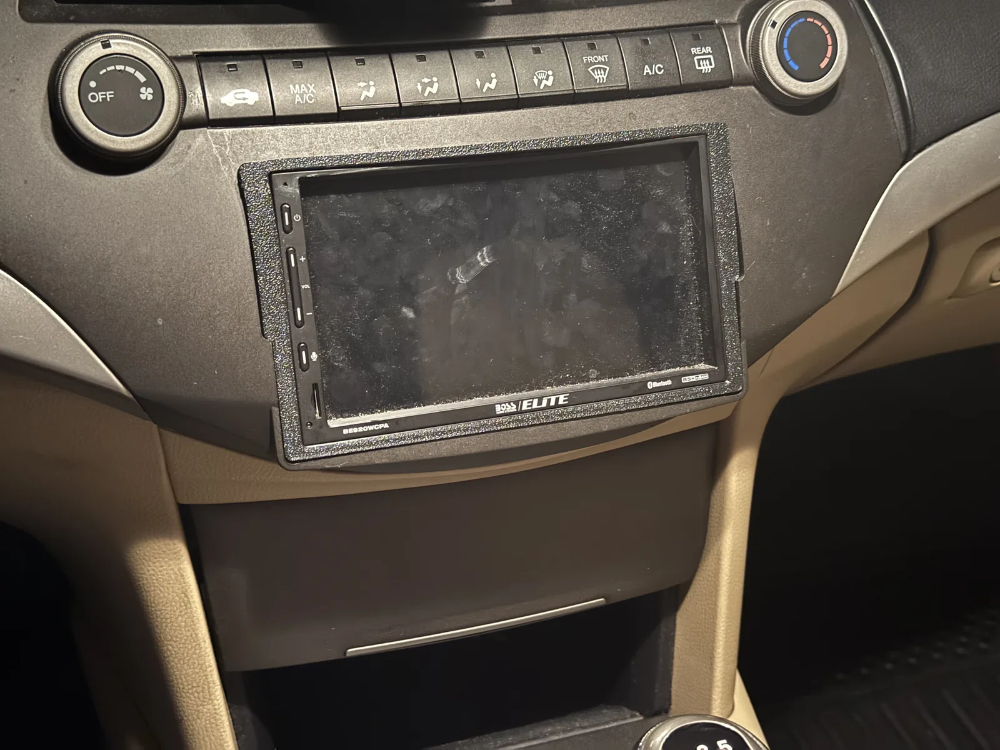
Installed


03
Skills
Tools and methods used in the work and projects above.
Design & CAD
- SolidWorks
- Creo
- AutoCAD
- GD&T per ASME Y14.5
- Drawings, BOMs, fits & tolerances
Simulation & Analysis
- Ansys MechanicalStructural, thermal, modal, vibration
- Ansys Composite PrepPost (ACP)
- Material selectionAshby charts
Electronics & Embedded
- ESP32 microcontrollers
- Circuit design
- LTspice
- Soldering
Software & Data
- PythonData analysis, embedded control
- MATLAB
- SQL
Fabrication & Test
- 3D printing
- Mill & lathe
- Lock-in amplifier
- PLL
Coursework
Behavior of Materials · Mechanics · Circuit Design · 3D Modeling · Manufacturing and GD&T · Finite Element Analysis · Feedback Control Systems
04
About
My work spans structural analysis and mechanism design.
I’m a mechanical engineering student at UC Berkeley, graduating in May 2027 with a 4.000 GPA. Since January 2026 I’ve worked as a mechanical engineer in EMCORE’s Quartz MEMS division, where I use test-data analysis and Ansys FEA to design and optimize quartz MEMS accelerometers and gyroscopes.
Outside of work, I’m a project lead on UC Berkeley’s solar vehicle team, where I’ve analyzed and redesigned chassis structures. I also build my own projects, including a 3D-printed six-axis robot arm with a custom cycloidal gearbox.
05 — Contact